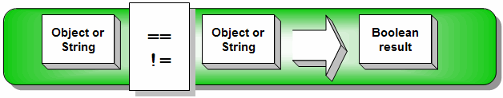
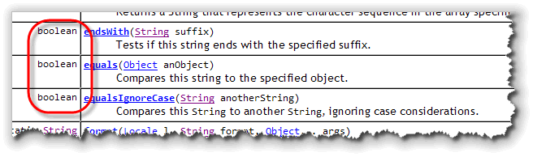
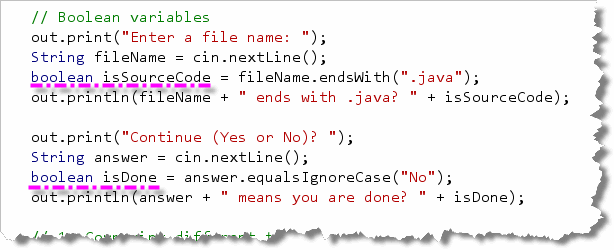
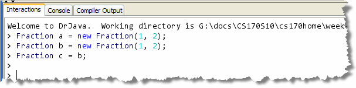
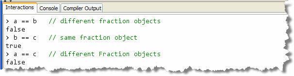
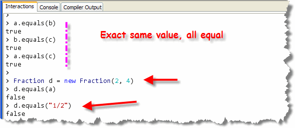
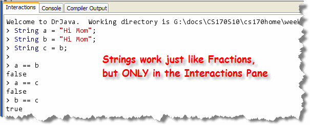
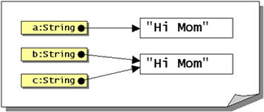
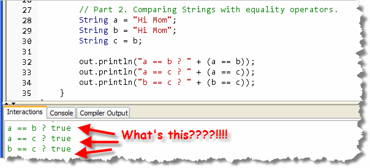

In addition to comparing
numbers, you can
also use the equality operators to compare objects and
Strings. We're not really concerned with
comparing objects at this point, but learning how to
correctly compare Strings is really
important:

Unlike numeric comparisons, where you can mix your types with abandon, you can only compare aString with another
String, a Rectangle with another
Rectangle, and so forth.
You may, however, use the equality operators
to compare a variable of type Object with any
object type. You'll see how that works later in the course,
when we look at object-oriented graphics and attempt to
determine which item on the screen was clicked with the
mouse.
You cannot compare String variables
or any other object type using the other
(inequality) relational operators. While these are legal expressions ...
"Hi" != "Mom"; // result is true
"dad" == "Dad"; // result is false
these, are illegal expressions:
"Mom" < "Dad"; // can't use inequality operator
Fraction b = new Fraction(1, 2);
b == "Mom"; // can't compare String & Fraction
So, if you can't compare Strings using the
relational operators, how do you see if Aardvark
comes before Zebra?
Glad you asked.
To answer your question, we need to start by looking at Boolean methods.
Boolean Methods
Most students easily understand methods like Math.Random(),
or Math.pow() which return the results of a numeric calculation.
We can also have methods that return Boolean, that is, true or
false, values. These Boolean methods are
also known as predicate methods.

When you call a Boolean method you'll often use a
boolean variable to store the result that the method
returns. Here are some examples using a few Boolean
methods in the String class (taken from the
StringRelations program in this week's code folder):

Here's what this code does:- The code asks the
user to enter a file name, and the answer is stored in
the
StringvariablefileName. - The
StringpredicateendsWith()method is used to see if the variablefileNameends with ".java". If it does, the method returnstrue; if not, the method returnsfalse. The returned value is stored in thebooleanvariableisSourceCode. - The user is again asked to respond if
they wish to continue by typing "Yes" or "No" and
their answer is stored in the
Stringvariable namedanswer. - The
booleanvariableisDoneis initialized by calling theString equalsIgnoreCase()method, checking against the value "No". If the user types "no", "NO", or "No", thenisDonewill be set totruewhile anything else will set it tofalse.
Even though this last example allows for
the user to type their response in any case, it's not
really an example of good programming. For instance, if
the user types "nope" or "N", isDone will
be set to false and the user will continue.
A better design would be to check against the String
"Yes", and then use the logical NOT operator to
reverse the sense of the condition. You'll learn how
to do that in the next lesson.
We'll look at some more predicate functions in the
String and Character wrapper
class shortly. Before we do that, though, let's
take a look at what it means when we say
that two objects (or Strings)
are equal.
Equality vs Identity
When you use the equality operators
with objects or Strings, you are comparing the
identity of the two objects, not their contents.
Specifically, you are asking, "do both object references refer
to the same object?"
Here's an example using Fraction objects.
(Fraction is a user-defined class that contains
a numerator and denominator. This is the same example that
I showed you in an earlier lesson. I've put a simplistic version
of the class in this week's code folder):

 Remember that object variables contain a
reference to the object they refer to, not the
actual object itself. In the example pictured here,
two
Remember that object variables contain a
reference to the object they refer to, not the
actual object itself. In the example pictured here,
two Fraction objects are created, (using
new), and the reference stored in the variables
a and b. A third object variable, c,
is the created, and the value stored in b is copied
to c, using the assignment operator.
All three variables refer to Fraction objects that
contain the same value, ½. If these were primitive
types such as int or double, all
three variables would be equal. Things are different for
object variables though.
Here's what memory looks like after the variables are created.
Now, let's use these Fraction variables in
some relational expressions, (using only the
equality operators, remember), and look at the results:

Obviously, when it comes to objects, the== operator
tests the identity of the object referred to by the two variables,
not the value contained in the objects themselves.
Using equals()
So, how do we see if two Fraction objects
contain the same value? The answer to that is kind
of complicated, but really makes sense when you think about
it.
First, all classes inherit a method named
equals() that allows you to compare that
object with any other object. This is a predicate
method (which is why we looked at those kinds of methods
first). Given any two object variables a and
b (of any type), you can write:
boolean isEqual = a.equals(b); // Compare two objects
What that actually means though, depends on
the class definition itself. For instance, in the
Fraction class that I've placed in the
code folder, I've added a really simplistic
equals() method that returns
true when two Fractions
have exactly the same numerator and denominator:

As you can see here, usingequals() compares
the value of the Fraction objects,
not their identity.
Of course, a more sophisticated and robust equals()
method would note that the Fraction d with a
value of 2/4 is really mathematically equal to
1/2 and would return true in that case as well.
However, you don't ever want different types, like
the Fraction and String values
shown in the last line, to be equal.
Later in the semester, when you start defining your own
classes, you'll learn how to write a better equals()
method. For right now, let's focus on String
variables and the different ways you can compare them.
String Relations
String objects, work just like Fraction:
if you use the equality operator, you are asking whether these
two String variables refer to the same
String object.
Let's take this to heart and perform the same test we did for
Fraction objects. We'll create three String
variables, a, b, and c, and we'll assign
the same String value to the first two. Here's
the code:


If we draw a picture like we did forFraction
objects, we expect to end up with something like this.
And, in the Interactions Pane, when we write and run exactly the same relational
tests we used with our Fraction variables (as you can
see in the screen-shot here),
we find that we get exactly the same result.
Interned Strings
If we put exactly the same lines of code inside a program,
like I've done in the StringRelations program shown here:

all three expressions come back true!What's going on here? Why the difference.
Well, at first it may look like Java is treating String
objects specially, comparing the contents of each String,
like Pascal, Visual Basic, and C++ do.
Don't be deceived, however;
that's not what's happening at all!
Our test program reports such unexpected results because
our mental picture of what
happened in memory is faulty. Since String
objects are immutable, when you put String
literals into a program, Java automatically shares the
same actual String between several references.
This only occurs with literal
String objects, not with any other object types
and not with String variables.
 When we put our code inside the StringRelations program,
Java actually stores the characters "Hi Mom"
only once. The line where the
When we put our code inside the StringRelations program,
Java actually stores the characters "Hi Mom"
only once. The line where the String variable
b is created does not create a second copy of
the words "Hi Mom". Thus, all three String variables,
a, b, and c, refer to exactly the same
characters in memory as shown in the picture here.
These shared String literals are known as
interned Strings.
By now you might be really confused, especially if you've
been following closely. Why doesn't the DrJava Interactions
Pane give the same results as the StringRelations program.
The answer is fairly simple. To get the Interactions Pane to work
without a surrounding program, DrJava creates an "unnamed" class
and treats all of the variables you create there as instance
variables, not local variables. That's why your
Interactions Pane variables are automatically initialized, when
the variables you create inside your main() method
are not.
When you use String literals in the Interactions Pane,
instead of interning the contents of the String, DrJava
treats your statement like this:
String a = new String("Hi Mom");
This code creates a new version of the character sequence, instead
of interning the characters for use by all String
variables inside the program.
Comparing Strings
The bottom line is that you should never use the
relational (or equality) operators to compare Strings.
The answer you get back is almost always wrong! Instead,
you should always compare String objects
using the methods in the String class. Let's
look at several of them.
equals()
The equals() method returns true
if the contents of two Strings exactly match,
and false otherwise.
Two Strings match if they are exactly the same
length, and they contain exactly the same sequence of characters.
Here are some examples:
"cat".equals("cat"); // true
"cat".equals("Cat"); // false
This is called lexical ordering. This is not the same as dictionary ordering. In the dictionary, the words "Cat" and "cat" are the same. With lexical ordering, because the Unicode value 'c' is much larger (99) than the Unicode value for the capital 'C' (67), the two words are not the same.
Notice that you can call String methods
using literals like "cat" as well as variables, because
String literals are actually objects.
equalsIgnoreCase()
Often, you want to make a comparison without taking case
into account. As you saw in the previous section, the
equals() method uses the underlying Unicode value to
make its comparisons, so that "Bob" is not equal to "bob".
The equalsIgnoreCase() method works differently.
It returns true if the contents of
two Strings match when case is not considered,
and false otherwise. Here's an example:
"cat".equalsIgnoreCase("cat"); // true
"cat".equalsIgnoreCase("Cat"); // true
"cat".equalsIgnoreCase("dog"); // false
This method is really useful when you want to check user input
against a String literal in your program, such as a
username or email address.
endsWith(suffix), startsWith(prefix)
Both of these methods return true if the
String on the left, (the String
calling the method), ends with or starts with the
String on the right, (the String
passed as an argument).
"Junk.java".endsWith(".java"); // true
"testFile.txt".startsWith("test"); // true
Both of these methods are case-sensitive (like the equals()
method. To get a case-insensitive comparison, you can combine these
with the toUpperCase() or toLowerCase()
methods, using method chaining, like this:
String fileName = cin.nextLine();
boolean isWorksheet = fileName.toLowerCase().endsWith("xls");
compareTo() or compareToIgnoreCase()
The two equals() methods only allow you to
see if two Strings contain the same words. They
don't allow you to check if one is lexigraphically
larger or greater. (In other words, you can't tell if it
appears before or after in the phone book or dictionary.)
To do this, you need to use one of the compare()
methods. Instead of returning a boolean value,
these methods return three different possibilities:
- If both strings are equal then the methods return 0.
- If the
Stringon the left appears before the one on the right, then the methods return a negative number. - If the
Stringon the left appears after the one on the right (that is, the method parameter), then the methods both return a positive number.
Here are a couple of examples:
"cat".compareTo("cat"); // 0 - equal
// "cat" > "Cat" (Unicode case-sensitive ordering)
"cat".compareTo("Cat"); // Positive
"cat".compareToIgnoreCase("Cat"); // 0
// "cat" < "dog"
"cat".compareTo("dog"); // Negative
Always compare Strings using String methods!